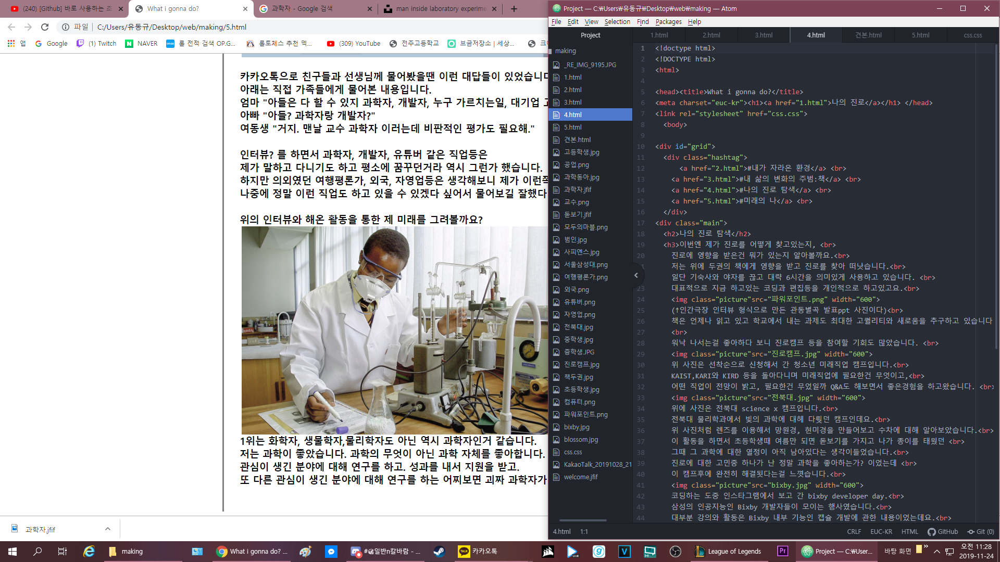

미래의 나
한 선생님이 저에게 보충을 빠지는 이유를 물어보았습니다.
저는 "제 진로를 찾아 떠났습니다."라고 말했습니다 (직접인용)
그러자 선생님은 제가 진로가 안보인다고 하셨습니다 (간접인용)
저도 가장 컷던 우려는 역시 대학교=직업이라는 생각이였습니다.
하지만 저는 비전이 대학교에 있다고 생각하지 않습니다.
예전이고 지금이고 노력을 증명하는건 공부가 좋다고 생각합니다.
하지만 능력=노력도 아니고 공평하다고 생각하지도 않습니다.
점점더 혁신적이 되어가는 사회에서 능력을 증명할 방법은 많습니다.
물론 제가 더 배우고 싶다면 대학교에 들어가겠죠.
또 실험과 연구를 좋아하니 대학원생이 되는길도 생각중입니다.
이런 제가 미래엔 과연 뭘 하고있을지 생각해볼까요?
제가 생각하고 있는 진로는 많습니다.
하지만 제가 정말 어울리는지 확인하기 위해 주변인들에게 물어보았습니다.
"내가 나중에 뭐하고 살거같아?" 이 질문으로 통합시켜 10명정도에게 물어보았습니다.
카카오톡으로 친구들과 선생님께 물어봤을땐 이런 대답들이 있었습니다.
아래는 직접 가족들에게 물어본 내용입니다.
엄마 "아들은 다 할 수 있지 과학자, 개발자, 누구 가르치는일, 대기업 고위직."
아빠 "아들? 과학자랑 개발자?"
여동생 "거지. 맨날 교수 과학자 이러는데 비판적인 평가도 필요해."
인터뷰? 를 하면서 과학자, 개발자, 유튜버 같은 직업등은
제가 말하고 다니기도 하고 평소에 꿈꾸던거라 역시 그런가 했습니다.
하지만 의외였던 여행평론가, 외국, 자영업등은 생각해보니 제가 이런쪽도 관심있구나 싶어서
나중에 정말 이런 직업도 하고 있을 수 있겠다 싶어서 물어보길 잘했다 생각했습니다.
위의 인터뷰와 해온 활동을 통한 제 미래를 그려볼까요?
1위는 화학자, 생물학자,물리학자도 아닌 역시 과학자인거 같습니다.
저는 과학이 좋았습니다. 과학의 무엇이 아닌 과학 자체를 좋아합니다.
관심이 생긴 분야에 대해 연구를 하고. 성과를 내서 지원을 받고.
또 다른 관심이 생긴 분야에 대해 연구를 하는 어찌보면 괴짜 과학자가 되있을거 같습니다.

두번째론 코딩, 개발자, 프로그래머가 된 저일듯 하네요.
포노사피엔스를 읽으면서 비전있고 제 창의력을 살리고 싶은 진로를 가지고 싶었는데.
코딩을 하다보니 정말 비전있고 저에게 맞는 진로라 2순위가 되었습니다.
평소에 앱을 쓰거나 빅스비 디벨로퍼 데이 같은 곳을 갈때마다 생각했던게 있습니다.
아 이점만 개선하면 아 이렇게 했었으면. 이런 부분을 제가 코딩을 배워서 고치고 만든다면
돈많은 프리렌서로 많은 사람이 부러워하는 삶을 살거 같습니다.
중학교때 어울리던 친구중 과학을 좋아하는 친구 2명이 있었습니다.
얘기하다 궁굼한게 생기면 바로 물어보려 달려가던 선생님이 있었는데요
3학년때 과학 선생님인 이*아 선생님이 정말 진심을 다해 알려주셧습니다.
원래부터 친구들한테 뭘 알려주는걸 (참견하는걸) 인생의 재미로 살았었는데.
저 선생님이 알려주시는 걸 보고 학생들 가르치는 것도 정말 재밌겠다 싶었습니다.
선생님이나 교수가 된다면 TMI 좋아하는 선생님으로
과학좋아하는 학생과 점심시간을 사용하고 있을꺼 같네요.
마지막으로 바텐더와 유튜버네요. 갑자기 왠 바텐더냐고요?
중학교때 영화에서 또는 만화에서 바텐더를 볼때마다 너무 매력적인 직업이였습니다.
또 동영상 편집을 배우면서 유튜브 생각을 하던때라 바에서 유튜브를 찍고 싶었습니다.
위에서 무슨일을 하든 또는 다른일을 하든 50살 넘어가면 바를 차리지 않았을까요?